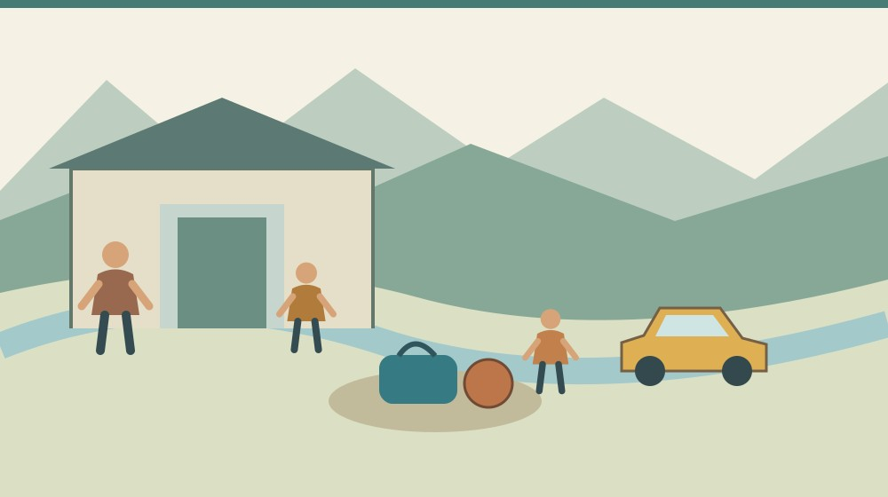
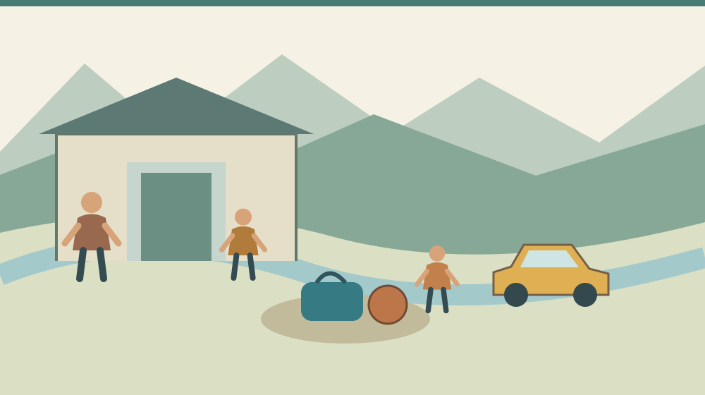
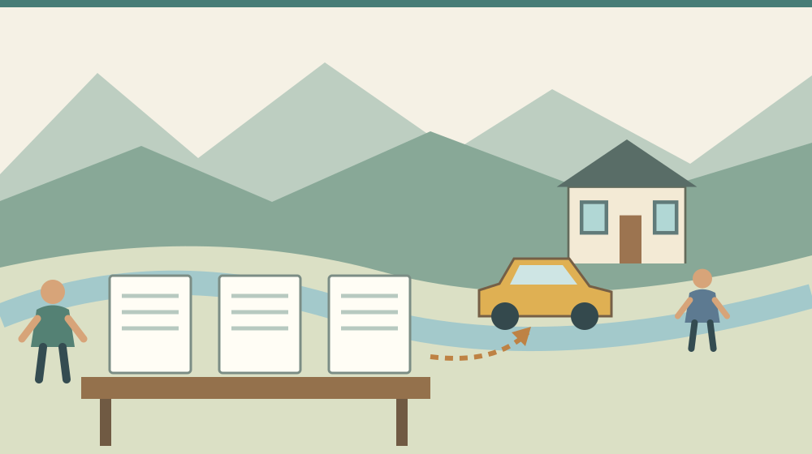

森町の地域クラブ費用｜月会費以外の負担

Q. 森町の地域クラブは、月の参加費だけ用意すれば通えるの？
森町のMori・Asahiクラブは月1,000～2,000円の参加費に加え、年800円の保険料と、各クラブが決める会費が必要です。用具や送迎の負担も別に確認します。初回募集は終了し、公式案内の次回申込みは2026年12月です。オリジナルクラブは各代表者に条件を確認してください。
森町で課外活動を続けるための家計
森町の地域クラブを選ぶ家族には、子どもの希望と同時に、支払日や送迎を調整する仕事があります。活動を開く地域の方にも、場所や道具を整える負担があります。参加費を見るときは、その両側の段取りを一緒に考えたいと思います。
私、大石浩之（磐田市／不動産業）は、住まいを選ぶ材料に、家の外で過ごす時間も含めたいと考えています。家賃が予算内でも、夕方の移動を家族だけで回せなければ、暮らしは別のところで詰まります。今回は地域クラブの費用に絞ります。
この記事は2026年10月25日に町の公式本文を確認して書いています。募集ページの更新日は2026年7月30日です。記事を公開した日と、町が案内を更新した日は同じではありません。新しい料金が10月に決まったという話でもありません。
森町への転入を考えている方は、子育て移住で相談先を確かめる記事も参考になります。支援の名称を覚えるだけでなく、家族が困った日にどこへ連絡するかを整理する入口です。
事実整理：地域クラブは二つの種類がある
森町「地域クラブ活動 参加者募集」は、2026年9月からの新しい放課後の活動を案内しています。町が事務をサポートするMori・Asahiクラブと、地域団体が自主運営するオリジナルクラブの二種類です。申込先も費用の確認先も分かれます。
Mori・Asahiクラブは中学生が対象です。クラブによっては小学5年生から参加できます。活動期間として2026年9月から2027年3月末が示されています。町内のどの児童でも、どの活動でも参加できるという意味ではありません。
町公式「地域クラブの認定制度」は、町内の中学生が地域でスポーツや文化芸術活動に親しむための制度を説明しています。認定する仕組みと、個別クラブの募集条件は別の情報です。認定の存在だけで、空き枠や参加費まで判断しないようにします。
オリジナルクラブは、代表者へ直接申し込む方式です。活動内容や会費は各募集チラシを参照し、不明点は各クラブへ問い合わせる案内になっています。Mori・Asahiクラブの料金を、そのままオリジナルクラブへ当てはめることはできません。
小学生を放課後に預かる放課後児童クラブとも、今回の地域クラブ活動は別です。名前が似ていても、目的、対象、申込みが一致するとは限りません。家計表や家族の予定表には、略称だけでなく参加する活動の正式名を書いておくと混同を防げます。

月額と前払いを分けて計算する
Mori・Asahiクラブの参加費は月1,000～2,000円です。町公式の募集案内は、クラブによって異なると説明しています。スポーツ安全保険料は年800円。さらに、参加費とは別に、クラブごとの会費が設定されます。
参加費の支払いは毎月とは限りません。2026年度は第1期が9～12月、第2期が1～3月で、それぞれまとめて前払いする案内です。月額が小さく見えても、口座からお金を出す時点では数か月分になる。この違いが家計では効きます。
第2期の参加費だけを計算すると、月1,000円なら1,000円×3か月＝3,000円です。月2,000円なら2,000円×3か月＝6,000円になります。これは公式月額を3か月に掛けた計算で、保険料や別途会費を含む総額ではありません。
兄弟で参加する場合の見積りも、まず一人ずつ書きます。月額、参加する月数、会費、支払日を別々に並べてから合算します。兄弟割引があるとは本文で確認できないため、人数を増やしても割引を想定した予算にはしません。
保険料の「年800円」も、途中参加なら月割りになると読み替えないでください。12月の申込みでどの期間を対象に納めるか、既に別の活動で加入している場合の取扱いは、参加予定のクラブへ確認する項目です。分からない欄は空欄で残します。
申込み後には納付書を送るとされています。家族の誰が郵便物を受け取り、誰が支払うのかも決めておきたいところです。電子フォームを入力した人と支払う人が違う場合は、申込みを終えたことだけで準備完了にしない方が確実です。
会費、道具、送迎は別の欄にする
森町の募集本文は、クラブ会費を用具代や会場使用料などの活動費用と説明しています。会費の金額と徴収方法は各クラブで異なります。月額参加費と同じお金を二重に呼んでいるわけではない点が、見落としやすいところです。
用具については、既に持っている物、借りられる物、指定品の購入が必要な物に分けて問い合わせます。公式本文だけでは個別の指定品や貸出条件は分かりません。買った後に使えないと分かるのを避けるため、注文前に確認する順序を提案します。
送迎の費用はクラブへ払うお金とは別です。自家用車なら移動距離、公共交通なら往復運賃が家計側の条件になります。この記事では森町内の送迎相場を確認していないため、交通費を一定額で置きません。家族の出発地と会場を基に計算します。
移動時間も記録します。例えば一往復に何分かかり、送りと迎えで何回往復するのか。会場で待つなら待機時間はどうなるのか。金額に換算しなくても、仕事を終える時刻と重ねると、毎週続けられる曜日が見えてきます。
家族以外に送迎を頼む場合は、頼めると思っている段階と、相手が了承した段階を分けます。善意を固定のサービスとして予算に入れると、相手が休めない仕組みになりかねません。代理の連絡方法や欠席する判断も、参加前に相談する材料です。
森町から先の進学も見据える家庭には、高校への通学と実費を整理した記事があります。今回は地域クラブの費用ですが、授業料などの制度と、家庭が負担する移動費を分ける考え方は共通します。
良い点：活動の入口と費用の種類が示されている
森町の地域クラブ案内の良い点は、二種類のクラブを分け、申込先まで示していることです。家族が町への申込みと団体への直接申込みを取り違えずに済みます。地域で活動を準備する側にも、相談を受ける入口が見える利点があります。
月の参加費、年の保険料、クラブごとの会費が分けて書かれている点も評価できます。合計額が一つだけ書かれるより、何のために支払うお金なのかを尋ねやすくなります。家族も、確認が済んでいない費目を見つけやすい構成です。
前払いの期間が示されているので、支出する月を先に考えられます。活動を支える側にとっても、期ごとの参加者を踏まえて会場や用具を準備する仕組みとして読めます。ただし、個別クラブの会計内容まで確認したという意味ではありません。
私は、地域の指導や運営を、安いから使えるものとしてだけ見ない方がよいと思います。会費が何を支えているのかを確かめれば、家庭も納得して参加を選べます。担い手の負担を見える形で扱うことは、活動を続ける話につながります。
注文したい点：家庭ごとの合計はまだ作業が必要
地域クラブの総費用は、町の募集本文だけでは確定できません。各クラブの会費や用具、会場への移動が残るためです。私は、候補を比べる家庭が同じ項目で質問できる一覧があると、家族にも案内する側にも助けになると考えます。
金額の説明に加え、いつまでに払うのか、追加費用はどの段階で決まるのかも知りたいところです。これは追加費用が不適切だという話ではありません。家計には支出できる時期があり、事前に分かれば参加を続けやすくなるという注文です。
送迎を担う人が確保できない場合の相談先も、個別に確認が必要です。この記事の確認範囲では、全クラブ共通の送迎サービスは確認していません。送迎があるとも、絶対にないとも書かず、会場と活動時間を確かめてから問う順にします。
私は、選択肢を増やすことと、家庭の段取りを増やすことの境目に迷います。希望する活動があっても、仕事と移動が重なる家族はいます。そこで参加を急がせるより、次の受付までに一つずつ条件を調べられる案内にしたいと思います。

対案・結論：今日、五つの費目を一枚にする
地域クラブ選びで今日できることは、候補を一つ決め、参加費、保険料、会費、用具、送迎の五つを紙に書くことです。確認済みの数字と、未確認の空欄を分けます。合計を出すのは、少なくとも支払いの必須項目が分かってからで構いません。
次に支払時期を添えます。参加費は月額と期ごとの金額を併記し、会費は徴収方法を問い合わせます。納付書が届いた後に何日までに払うのかも確認対象です。月々の生活費と、まとまった支出に備えるお金を同じ欄で扱わないようにします。
公式募集本文の初回申込締切は8月20日で、既に過ぎています。年度途中の申込みは期ごとで、次回は12月との案内です。12月の開始日や締切日は本文に示されていません。今日申し込めると決めつけず、募集の更新を確認してください。
オリジナルクラブは、各代表者への問い合わせが先です。町のMori・Asahiクラブの次回受付月を、こちらにも当てはめないようにします。問い合わせでは、子どもの学年と希望する活動を伝え、対象、受付、費用の順に確認すると話を整理できます。
移動の確認には、一日の移動を試す記事の方法を使えます。観光の一日と、学校や仕事のある日の送迎は別です。休日に距離を確かめても、平日の時刻条件は改めて調べる必要があります。
家族に残す記録：支払いと欠席の連絡先
地域クラブの記録には、正式名、申込者、会場、曜日、連絡先、費目、支払期限を残します。道具の注文を担当する人と送迎を担当する人が同じ紙を見られる形なら、片方だけが情報を抱えるのを避けられます。
欠席や退会の連絡方法も記録します。Mori・Asahiクラブは退会を随時受け付ける一方、納入済み参加費と保険料は返金できないと案内しています。試して合わなかった場合の負担も、参加前に家族で共有しておく材料です。
問い合わせの返答は、確認した日と相手の窓口名を添えて残します。口頭で聞いた内容を家族に伝えるとき、希望と回答が混ざるのを防ぐためです。個人の連絡先などは家庭内で扱い、公開の掲示板やSNSへ載せないようにします。
大石の視点：月額だけで暮らしは組めない
私は、住まいの家計も地域クラブの家計も、月額だけでは判断できないと考えます。家賃とは別に引越し時の支払いがあるように、活動にも前払いと道具の準備があります。私は紙の左に支払う相手、右に家族が動く時間を書く整理を提案します。空欄が残るなら、参加を決める前にその一つを問い合わせる。これは実際の相談例ではなく、暮らしを組み立てるための私の考えです。
月1,000円という数字だけで、続けられるとは決めません。子どもの希望を残しながら、家族の仕事と担い手の準備が両立するかを確かめます。今日の成果は入会ではなく、家計表の空欄が一つ埋まることでも十分です。
よくある質問
月額参加費に道具代も入っていますか？
Mori・Asahiクラブの公式案内は、参加費とは別に各クラブが会費を設定すると説明しています。会費には用具代や会場使用料などが挙げられていますが、個人で買う道具の範囲は本文だけでは分かりません。指定品、貸出の有無、購入時期を参加予定のクラブに確認し、注文前に必要額を整理してください。
2026年10月25日から申し込めますか？
Mori・Asahiクラブの初回締切は8月20日で終了しています。町の本文は年度途中の申込みを期ごととし、次回は12月と案内しています。12月の具体的な受付日は未掲載です。オリジナルクラブは各代表者への直接申込みなので、同じ日程だと考えず、希望するクラブへ受付状況を確認してください。
途中で辞めたら参加費は戻りますか？
Mori・Asahiクラブは随時退会できますが、納入済みの参加費と保険料は返金できないと町が案内しています。退会フォームでの手続きが必要です。クラブごとの別途会費や、オリジナルクラブの返金条件まで同じとは確認できていません。支払い前に、該当する費目ごとの取扱いを確認してください。
出典・確認日
2026年10月確認。開催・制度の数値は公式情報、評価と段取りの提案は執筆者の意見です。
- 森町：地域クラブ活動 参加者募集（2026年10月25日確認）
- 森町：地域クラブの認定制度（2026年10月25日確認）
開催日時、取扱条件、制度・数値は変わる場合があります。実際の利用前に主催者・担当窓口の最新案内を確認してください。個別の判断が必要な場合は、担当窓口や関係する専門家へご相談ください。